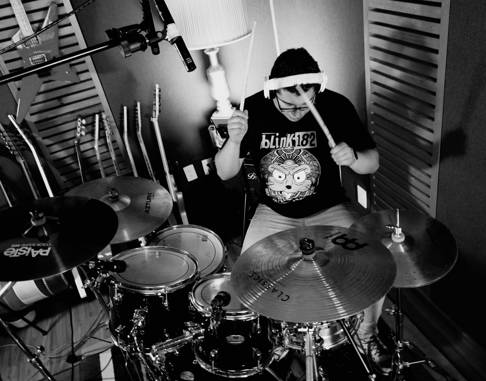

Data Science & Mathematics Engineering
Research Professor A
School of Engineering and Sciences
Campus Querétaro
2026 – 2029
As a scientist, my research focuses on bioinformatics and artificial intelligence, with particular emphasis on designing deep learning algorithms for prediction, classification, and algorithm enhancement in genetics and omics.
As an engineer, I have more than 13 years of experience managing computing systems, databases, data engineering initiatives, and institutional technology projects.
I am equally passionate about teaching, mentoring, and sharing knowledge with the next generation of engineers and scientists.
Research Highlights
Protein Function Prediction
Deep learning models for transcription factor and protein function prediction.
Trustworthy AI
Uncertainty estimation, bias calibration and reproducible modeling.
Protein Language Models
Representation learning for sequences and biological text.
AI for Social Impact
Hybrid RAG systems and data-driven solutions for society and science.
Indexed
Portfolio
Recognitions
Academic Events
Professional
Offerings
Portfolio (Featured Projects)
Previous projects
Publication Records
Publications by year and type
Published records only.
Education & Theses
Academic degrees, research areas, distinctions, and theses.
PhD Computer Science and Engineering
Universidad Nacional Autónoma de México (UNAM)
Posgrado en Ciencia e Ingeniería de la Computación
Instituto en Investigaciones en Matemáticas Aplicadas y Sistemas
M.Sc. Computer Science and Engineering
Universidad Nacional Autónoma de México (UNAM)
Posgrado en Ciencia e Ingeniería de la Computación
Laboratorio Avanzado de Procesamiento de Imágenes (LAPI) · Facultad de Ingeniería
B.Eng. Computer Engineering - Biomedical Engineering
Universidad Nacional Autónoma de México (UNAM)
Facultad de Ingeniería
View ThesisPDF · UNAM Institutional RepositoryOther Academic StudiesSee more
B.A. Theology
Centro Educativo Mundial
August 2010 – March 2015Experience
Professional Experience
Academic Experience
Research Experience
Research Stays
Wilfrid Laurier University (WLU)
Waterloo, Canada
Research stay with Dr. Gabriel Moreno-HagelsiebAcademic Events / Congresses
Industrial & Intellectual Property Right
Sistema en línea de diagnóstico asistido por inteligencia artificial para COVID-19 mediante imágenes médicas
Software / intellectual property record for an AI-assisted online diagnostic system using medical images.
- Category: Programas de computación
- Registration number: 03-2023-121412445700-01
- Rights holder: Universidad Nacional Autónoma de México
- Inventors: Leonardo Ledesma-Domínguez +11 inventors
- Arámbula Cosío Fernando
- Carbajal Degante Erik Yidell
- Escalante Ramírez Boris
- Fuentes Pineda Gibran
- Hernández Aviña Haydee Olinca
- Ledesma Domínguez Leonardo
- Moreno Tagle José Carlos
- Olveres Montiel Jimena
- Rodríguez Maya Cinthia
- Torres Robles Fabián
- Valencia Arana Carlos
- Velázquez Mena Alejandro
Peer Review Contributions
Contributing to the scientific community through peer review for international journals and publishers.
Published Reviews
Reviews in Progress
Reviews in progress are shown without manuscript titles in accordance with peer-review confidentiality guidelines.
Courses Taught
Teaching activity by year, including the number of course offerings and students served.
| # |
|---|
Languages & Skills
AI & Machine Learning
Bioinformatics
Programming Languages
Frameworks & Tools
Teaching Skills
Leadership
Testimonials
Awards & Honors
Contact
Email: leonardo.ledesma@tec.mx
Personal website:leonardoled.github.io
Beyond Academia

Research inspires discovery. Music inspires creativity.
Outside academia, I enjoy playing drums and recording drum covers. Music gives me another space for discipline, creativity, and continuous learning.
▶ Visit my YouTube Channel